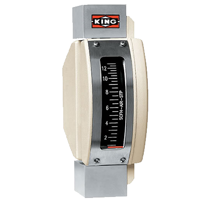

King Instrument Co.
Series 7100 Flowmeter, 2.8 GPH, 1/4" Female NPT, 316L Stainless Steel Internal Components, Without O-Ring, Without Valve, Without Alarm
Item # 7101023006W · per EA
- All stainless steel construction
- Alarm option available
- Conforms to ISA RP 16.6
- Internal components: 316L stainless steel or Hastelloy® C-276
- O-ring options: EPR, Buna-N, Kalrez® or without o-ring
- Ambient temperature: - 40° F to 125° F (- 40° C to 52° C)
- Maximum pressure 1500 psig with valve and 4000 psig without valve
- Scale cover: glass
- King Series 7100 Flowmeter Data
- King Series 7100 Flowmeter Installation Guide
Specifications
| Accuracy | ± 5% of Span Accuracy |
|---|---|
| Category | Instrumentation |
| Connection Size | 1/4" |
| Connection Type | Female Pipe Thread |
| Fitting Material | 316L Stainless Steel |
| Flow Rate | 2.8 gph |
| Internal Component Material | 316L Stainless Steel |
| Maximum Psi | 4000 psig |
| Material | 316L Stainless Steel |
| Manufacturer | King Instrument Co. |
| O-Ring Material | N/A |
| Repeatability | 1% |
| Series | 7100 |
| Size | 1/4" |
Substitutes and related
 Series 7200 Flowmeter, 2.0 GPM, 3/8" Female NPT, 316L Stainless Steel Internal Components, EPR O-Ring, PVC Fittingsper EA · Sign in for price
Series 7200 Flowmeter, 2.0 GPM, 3/8" Female NPT, 316L Stainless Steel Internal Components, EPR O-Ring, PVC Fittingsper EA · Sign in for price Series 7310 Flowmeter, 3.0 GPM, 1/2" Female NPT, 316L Stainless Steel Float, 316L Stainless Steel Fitting, Viton® O-Ring, Without Alarmper EA · Sign in for price
Series 7310 Flowmeter, 3.0 GPM, 1/2" Female NPT, 316L Stainless Steel Float, 316L Stainless Steel Fitting, Viton® O-Ring, Without Alarmper EA · Sign in for price Series 7330 Flowmeter, 60.0 GPM, 2" Female NPT, Teflon® Float, PVC Fitting, Viton® O-Ring, With Alarmper EA · Sign in for price
Series 7330 Flowmeter, 60.0 GPM, 2" Female NPT, Teflon® Float, PVC Fitting, Viton® O-Ring, With Alarmper EA · Sign in for price Series 7430 Flowmeter, 240 cc/min, 1/4" Female NPT, Sapphire Float, 316L Stainless Steel Fittings, Viton® O-Ring, With 316L Stainless Steel Valve/Inlet, Without Alarm, 65 mm Scaleper EA · Sign in for price
Series 7430 Flowmeter, 240 cc/min, 1/4" Female NPT, Sapphire Float, 316L Stainless Steel Fittings, Viton® O-Ring, With 316L Stainless Steel Valve/Inlet, Without Alarm, 65 mm Scaleper EA · Sign in for price